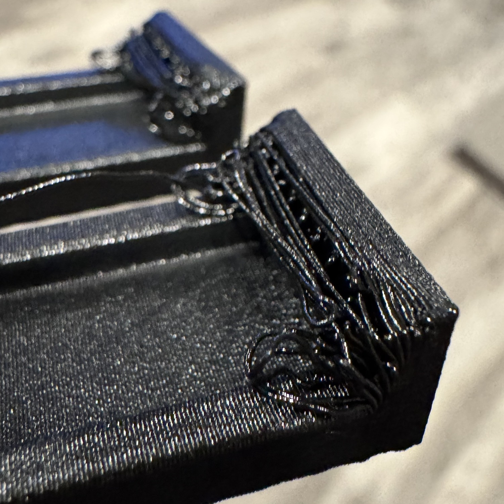

FUNDAMENTALS
Bridges need two landings
Trace the ends of the first spanning roads onto material that the printer has already laid down.

Read the mouth perimeter
Find the first line across the opening in the native slice. Read its ends and the interior roads against the preceding courses. The Bridge label identifies a process. The geometry underneath each end tells you whether it has a landing.
Favor a short span between continuous sidewalls. Inspect where those walls meet reliefs, chamfers and corners.
Carry the slope one course at a time
A corbel advances over the course beneath it. Read the overlap along the entire feature, including at the seam and returns. The front-bottom handholds use this construction to keep their grip roofs free of support.
Keep reinforcing stock behind the seat wherever the adjoining parts and service envelope allow it.
Rear receiver example. In the ceiling-down back-top, the Pisco entry relief ends below a full-thickness bridge landing. The catch spans along the pocket between its end shoulders. The pocket stays clear of support where a screwdriver cannot reach.
Wago roof failure · Rear receiver access · Rear catch bridge paths